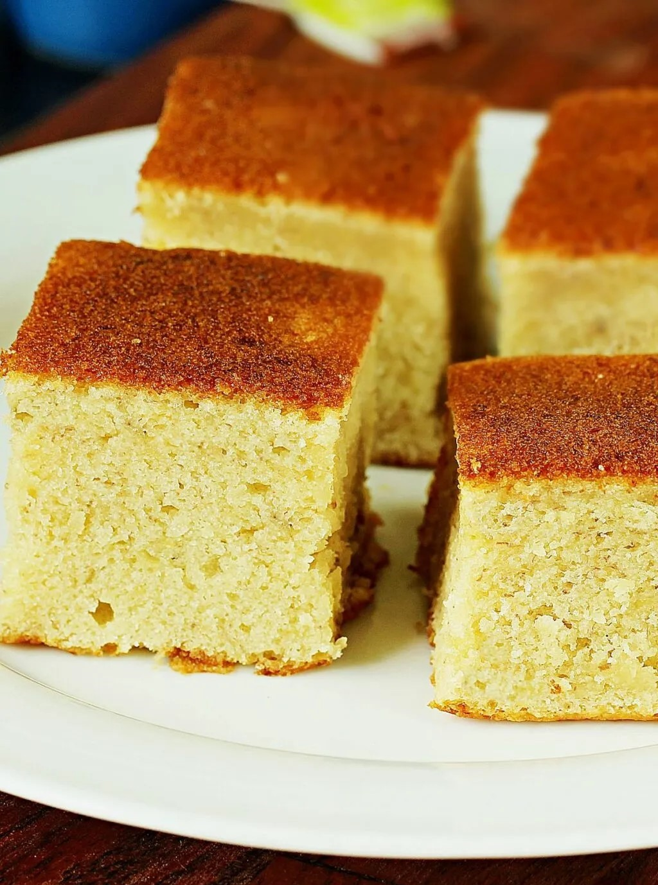

Banana cake

For the Frosting (Optional):
- 1/2 cup unsalted butter (softened)
- 1 1/2 cups powdered sugar
- 1 tsp vanilla extract
- 1 to 2 tbsp milk or heavy cream (adjust for desired consistency)
Instructions:
- Preheat the oven to 350°F (175°C). Grease and flour a 9-inch round or square cake pan or line it with parchment paper.
- Mash the ripe bananas until smooth with a fork or potato masher. Set aside.
- In a medium bowl, whisk together the flour, baking soda, and salt.
- In a large bowl, beat the softened butter and sugar together using an electric mixer until light and fluffy (about 2-3 minutes).
- Add the eggs, one at a time, beating well after each addition. Then, add the vanilla extract and mix until combined.
- Gradually add the dry ingredients into the wet ingredients, alternating with the buttermilk (or regular milk). Start and end with the dry ingredients. Mix until just combined.
- Fold the mashed bananas into the batter gently.
- Pour the batter into the prepared cake pan. Bake for 30 to 35 minutes, or until a toothpick inserted in the center comes out clean.
- Allow the cake to cool in the pan for 10 minutes, then transfer it to a wire rack to cool completely.
For the Frosting (Optional):
- Beat the butter, powdered sugar, and vanilla extract together until smooth and fluffy.
- Add milk or heavy cream one tablespoon at a time until you reach the desired consistency.
- Frost the cooled banana cake with the frosting, and garnish with sliced bananas or chopped nuts if desired.